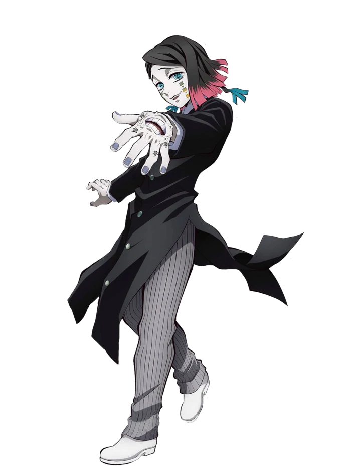

Enmu
Kanji
魘夢
Rōmaji
Enmu
Characteristics
Race
Demon
Human (Formerly)
Gender
Male
Age
Mid to late twenties (Physically)
Affiliation
Affiliation
Twelve Kizuki
Base of Operations
Infinity Train
Debuts
Anime Debut
Episode 26
Manga Debut
Chapter 51
Portrayal
Japanese VA
Daisuke Hirakawa
English VA
Landon McDonald
"All human hearts are the same. So fragile and weak, like glasswork."
-Enmu to himself in Train of Infinite Dreams
Enmu (魘夢 Emmu) was the primary antagonists in the Mugen Train Arcof Demon Slayer: Kimetsu no Yaiba. She was a demon affiliated with the Twelve Kizuki, being the secondary holder of the position of Upper Rank Six, a position she shared with the primary holder, her older brother, Gyutaro.
He was a demon affiliated with the Twelve Kizuki, holding the position of Lower Rank One.
Appearance
Enmu was a slender young man who appeared to be in his mid twenties. He possessed a medium build and was of average height. He had ringed blue eyes that tilt sharply down towards the sides of his face, the left one of which with the kanji for "Lower One" etched into its iris, and a horizontal slit on his right instead of a pupil. He had three square-shaped markings on each of his cheeks, each separated by a smaller square, which fade from green to yellow in color, and straight, chin-length hair of a dark black color which he wore parted to his right, the right side tucked behind his ear. His hair fades into a red-pink color near the ends, but appears blue at the tips of the two longer, shoulder-length strands that curve upwards and outwards below the base of his neck, from under the rest of his hair.
Enmu wore a long, black button-up coat that arched upwards on either side of his legs so that only the two tails in front and behind fall down below his knees, and a white dress shirt, the cuffs of which appear over those of his coat. He also wore a pair of pinstriped pale gray pants and plain, slightly heeled shoes of a similar color.
When Enmu received more blood from Muzan Kibutsuji, his left hand forms a mouth at the back, an eye next to it and most of his fingers have the kanji for Dream etched on their skin.
Personality
Enmu was very sadistic in personality, and was noted to enjoy the pain and suffering of humans; his favorite method of torment being giving them a happy and pleasant dream before turning it into a nightmare. He took pleasure in the suffering of others, enjoying the agonized expressions they made as he tortured them. This sadism even extends to his fellow demons, as he relished seeing his fellow Lower Ranks being killed right in front of his eyes.
As well as sadism, Enmu was shown to exhibit masochistic behaviors, a multitude of times he expressed positive reactions to pain inflicted on him. This enjoyment, however, seems to be limited to those he only respects and holds himself loyal to, the required power over him mostly being hierarchical rather than literal. This masochism was shown prominently in the Infinity Castle meeting, during which, upon being gifted with Muzan's blood, a typically torturous and painful experience that could have potentially killed him, Enmu appeared with a smiling and flushed expression, enjoying the experience. Though, these masochistic tendencies were not prevalent in his battle against the Demon Slayers as when they successfully attacked him, he was seen only being amused, shocked, or frustrated by his failures.
Like most demons, Enmu was shown to have little to no care for human life; he saw humans as nothing more than mere pawns, as he did not bother to warn his human minions of the various dangers of facing Demon Slayers, and simply considered them to be expendable. He also seemed to revel in turning humans into his desperate servants by using his power to give them nice and pleasant dreams, before he pulled them out and falsely promised to give them more if they helped him.
Enmu was also intelligent and cautious in approach to anything he executed, having complete understanding of his power's strengths and weaknesses and making sure to both exploit and avoid them respectively in order to succeed. However, upon being given more blood and therefore further empowered by Muzan, Enmu seemed to have become overconfident, arrogant and greedy, as seen when he acted more recklessly to obtain more blood from Muzan in order to properly challenge one of the Upper Ranks to a blood duel in order to take their place.
History
When Enmu was a human being, he had a tendency since childhood not to be able to distinguish the difference between dreams and reality, this caused many problems for the people around him. As an adult, even though he was not a doctor, he misused things like hypnotic therapies, as well as convincing patients who did not have long to live that they had recovered their health. Even though after a while they realized that it was all a lie, he kept doing this horrible scam over and over again.
One night, Muzan wanted to completely devour Enmu. Enmu's guts were eaten by Muzan and he was not supposed to turn into a demon at first, but because he felt no pain from the fatal wound, he envied and praised Muzan. With those last words, his heart and brain stopped working, so Muzan turned him into a demon. Enmu knew that he had been converted due to Muzan's whim and would only remember him in passing, so Enmu did his best to ascend to the rank of Lower Rank One.
Synopsis
Rehabilitation Training Arc After all of the remaining Lower Ranks were gathered together at the Infinity Castle, Muzan appeared before them in a female form. He regarded them with annoyance and tells them to lower their heads and squat in front of him. After they all did so, Mukago uttered that they were sorry to have been ordered to bow, as she didn't recognize Muzan in his current form. Muzan angrily asked why she spoke without permission, telling her to silence herself and not to talk unless directly asked a question. As she cowered in fear at her feet, Muzan went on to explain the death of Rui, the only Lower Rank who was not among the ones gathered before him, and asks the remaining demons why they're so weak. As one of the two Lower Ranks left alive, Rokuro then panics, exclaiming that he can definitely still be useful to Muzan if he just defers his death for a little longer. Muzan asks how he would be useful, how long the deferment would last, and how much power he could wield as he was, and Rokuro explains that if he had more of Muzan's blood, he can adapt it and definitely become a strong fighter worthy of his leader. Muzan angrily tosses Wakuraba's head down next to Enmu and Rokuro, asking Lower Rank 2 why he should be given more blood and saying that he should know where he stands. Rokuro tries to protest, but Muzan silences him and says that, since he had attempted to instruct his leader, Rokuro deserved to die. After killing Rokuro, Muzan turns to the last Lower Rank left, Enmu. Mugen Train Arc Later, Enmu appears standing upon the steam engine, remarking that dying while dreaming is a blessing. While waiting upon the outside of the train, Enmu works on the inside, sending his sentient hand to praise the train's conductor about the success of putting the Demon Slayers to sleep. In result, Enmu rewards him by also sending him into a presumably deep sleep. The hand then addressed the other conspirators, cautioning them about how to proceed with their plan and of its host's temporary inability to move. Back on top of the train, Enmu's main body joyfully reflects on his plan to destroy his targets' spirit cores to render them completely vulnerable, and of the fragile nature of human hearts and spirits. As his plan begins to unfold, he notes his victims' inability to wake up and stop his twisted scheme. While continuing to tease Tanjiro, Enmu muses over his enjoyment of first showing humans pleasant dreams and then giving them tormenting nightmares, as well as the finer details of his plan. Though somewhere inside his monologue, Enmu also wonders aloud how Tanjiro figured out how to wake himself up and out of his dream so quickly, which causes him to notice the Demon Slayer's earrings, much to his joy. Now targeted on the young Demon Slayer, Enmu's thoughts become solely on receiving more of Muzan's blood and challenging the Upper Ranked Demons with his newfound strength. Enraged, Tanjiro attempts to attack the Lower Rank, but Enmu quickly puts him to sleep. The youth just as fast breaks Enmu's technique despite the Demon's multiple attempts, leading the surprised Lower Rank to compliment his determination. His neck is then severed by the furious Demon Hunter, but an unfazed Enmu merely states that he now knew why his leader wants Tanjiro dead, and reveals to the shocked youth the reason for his continued survival: he had fused with the train while they had all slept. Taunting Tanjiro to protect the two hundred passengers inside of him, Enmu's severed head merges into the train. Overall Abilities: As Lower Rank One, Enmu was the strongest Lower Rank and closest to matching the strength of the Upper Ranks. Upon receiving more blood from Muzan Kibutsuji, his abilities were further enhanced. This level of ability was shown when Enmu's shapeshifting ability evolved to the point he was able fuse with a vehicle as big as a train. Additionally, his unorthodox sleep-based Blood Demon Art enabled him to render over 200 passengers in the Mugen Train, including the likes of the Hashira Kyojuro Rengoku, asleep and almost completely vulnerable. In direct combat, Enmu was able to hold his own against Tanjiro Kamado who had mastered Total Concentration, Constant, evading his sword swings with ease and constantly putting the Demon Slayer to sleep with his spells. In his fused form, every single inch of the Mugen Train became his body, which took the combined effort of Tanjiro, Zenitsu, Inosuke, Nezuko and Kyojuro himself to ward off and defeat. Despite all this, Enmu realized after his defeat that he wasn't quite at the level of an Upper Rank demon and pales in comparison to the likes of Daki, Gyutaro and Kaigaku, the least among the Upper Ranks. Enhanced Speed & Reflexes: As a member of the Twelve Kizuki, Enmu had assimilated a high concentration of Muzan's blood which has greatly improved his physical abilities and attributes, most notably his movement speed and reflexes. This was shown during his initial battle against Tanjiro where he was able to dodge and react to every single one of the Demon Slayer's attacks with little effort, even moving so fast that Tanjiro had trouble keeping up. Flesh Manipulation: Like all demons, Enmu possessed the ability to manipulate his own flesh. However, as a member of the Twelve Kizuki, Enmu's manipulation was at a very high degree; he ws able to mix his blood with ink that is almost untraceable, he used his flesh to create rope and bony awls able to enter dreams and cripple his victims, and he was able create tentacles strong enough to fully restrain Nezuko, who was a powerful demon herself. These tentacles also could be formed without limit and nearly overwhelmed the Demon Slayers if it had not been for Tanjiro's successful decapitation.
Muzan lectures them about how being in the ranks of the Twelve Kizuki isn't the end; it is only the beginning of what is to come. He states their sole purpose is to consume blood so they can be of use to him. Muzan angrily retorts that it has been more than a century since the Upper Ranks were last replaced and only they have ever disposed of the Hashira, yet the Lower Ranks are replaced all the time, to which Kamanue thinks to himself that he can't just tell them that. Capable of reading the minds of those he has shared blood with, Muzan angrily asks Kamaune why they couldn't be told that, expanding and extending his arm into a tentacle to grab the Lower Rank by his neck and lift him into the air.
A terrified Kamanue attempts to apologize, but was promptly eaten by Muzan as Enmu and the rest of the Lower Ranks keep their heads lowered in a shocked silence.
Next, Wakuraba thinks to himself that he's also going to be killed, so he needs to do more in order to keep his position as a Lower Rank, and, simultaneously, Mukago thinks about how she runs every time from the very mention of a Hashira. Muzan repeats aloud her thoughts, which she denies and Muzan goes to explain that he is sure that every time which she encounter a Hashira level Demon Slayer, her only thoughts are of escaping; a terrified Mukago exclaims that what she thought isn't true and that she would fight with her life on the line for him. Muzan asks her if she is denying what he was saying, and, as Mukago begins to apologize and cry, another bout of Muzan's tentacles crushes her into the ground, killing her.
Shocked by this, Wakuraba immediately assumes the worst and decides it would be a wiser choice to flee than stay if he wanted to keep his life. He dashes out of the Infinity Castle at a high speed, and Enmu, with a sadistic smile on his face, thinks to himself that that was a stupid move to make since Muzan will kill him either way. This conclusion turns out to be correct, as Wakuraba's head is swiftly chopped off, so fast that it leaves him wondering how he even died in his final few moments.
When asked for his final words, Enmu expresses joy at Muzan killing him personally and for the suffering of humans and his fellow Ranks, thanking his leader for leaving him until last. Muzan then changes his mind as he glances at Enmu, stabbing him with a needle-like appendage in the neck and giving him a generous amount of his blood, then telling him to be useful to him by killing the Demon Slayer Corps' Hashira. Muzan promises that if he kills the demon slayer with Hanafuda earrings, Tanjiro Kamado, Enmu will get even more blood. Enmu is then sent out of the hideout onto a street, where he is given a vision of Tanjiro, his target, which excites him for more blood from Muzan. 
After an extended period of time passes, Enmu notices that his human pawns were having trouble destroying the spirit cores, but decides that it was alright as they were simply buying time. Shortly thereafter, as he turns to Tanjiro who approaches him, he greets him and taunts that he showed him a pleasant dream, but could have made it a nightmare. Smiling, the Demon further adds that Tanjiro's next dream would be of his father coming back to life.
Thanks to Tanjiro and Inosuke's joint effort, they manage to discover Enmu's neck embedded in the train, and subsequently behead him by completely cutting off the train's top engine compartment. Enmu, in complete disbelief at his failure, begins to desperately curse all the Demon Slayers, Nezuko, and the Upper Ranks due to being inferior to them in power. As his body slowly disintegrates, he attempts to at least kill the weakened Tanjiro and Inosuke but only failed once more as his body began to crumble faster. While he dies, Enmu begins to further desperately curse his failure and frantically think that the entire debacle to be a nightmare, a reference to his childhood trauma, and fearfully demands to have a redo as he finally crumbles to nothing.Abilities
Fighting Style
Blood Demon Art
Sleep Inducement: Enmu's Blood Demon Art granted him the ability to force anyone into deep sleep. He can do this through different means, some more subtle than others, but all effectively leaving his foes vulnerable and unable to fight. The slumber induced was very potent and took considerable effort to wake up, as seen when Nezuko headbutted Tanjiro quite hard but failed to awaken him. However, his state of sleep was not perfect, as Enmu carefully preferred to stay away from Demon Slayers out of fear that his bloodlust could awake them, although he was far less cautious against normal human targets.
Dream Manipulation: Enmu's Blood Demon Art's secondary ability was his power to enter, manipulate and control someone's dreams when they are asleep. When using his technique, his victims experienced joyous dreams normally suited to each person, taking advantage of their vulnerabilities and ensuring they are unable to tell the difference from reality, thus rapidly seducing them to embrace the utopian visions that lay before them. This level of vulnerability maked it far easier for Enmu to manipulate his prey, which also doubled as a means to perpetuate his own sadistic practices. Just like he can bestow dreams, Enmu was equally capable of forcing nightmares, which he uses both as a psychological attack and a means of torture, something he was particularly fond of when preying on humans. But similarly to his ability to induce sleep, Enmu's dreams, while extremely potent, were not perfect, as one can be capable of resisting its effects through willpower, which allowed an affected person to realize they are in fact living an illusion. However, realizing they are in a dream is not enough to end the induced sleep, as Tanjiro was only able to force himself out of his induced slumber by committing suicide inside his dream, something he was forced to do repeatedly during his battle with the Lower Rank, doing so instantly every time he was forced to sleep.

When trapping someone inside their dreams, Enmu may enter the realm inside their minds. This dimension, however, had clear limits with borders, allowing one to enter the victim's subconscious where their "Spiritual Core" resided. Should this core be destroyed, it effectively destroys the target's mind, leaving their body as an empty shell, thus allowing Enmu to kill his victims in their dreams. However, it has to be noted that there was a danger of being affected and possibly mentally changed by the unconscious mind of his victim, as seen when one of Enmu's human agents was touched by Tanjiro's inner kindness and subsequently lost his will to destroy his spiritual core. For this reason, Enmu always has someone else enter into the target's dream instead of entering it himself.
TechniquesWhispers of Forced Unconscious Hypnosis - Enmu forms a mouth on the back of his hand which, upon saying "Go to sleep", forces the target into deep sleep instantly. This technique can be used multiple times in quick succession.
Eyes of Forced Unconscious Sleep - When fused with the Mugen Train, Enmu creates dozens of eyes on his flesh on which the kanji for Dream is engraved on their irises, and, upon looking into them, the target falls asleep.